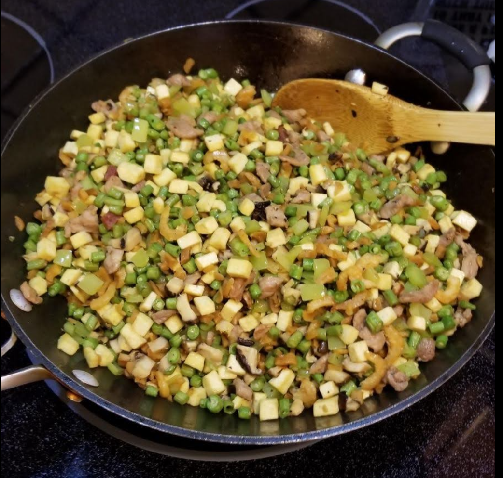

Seven Thing

Ingredients
- 3 lb Pork shoulder
- 1 lb (460 g) Green beans (Long beans)
- 100 g Preserved radish (one whole radish)
- Bell pepper (or banana pepper)
- 50 g Dried shrimp
- 125 g Dried Shiitake mushrooms
- Pressed tofu
Order
- Pork shoulder
- Tofu
- Bell pepper
- Mushrooms
- Dried shrimp
- Long beans
- Radish
Directions
- Soak the mushrooms in hot water for 30 minutes or so, or until soft. Do the same with the dried shrimp in a separate container
- When they are cool enough to handle, cut them into medium dice and retain the soaking liquid(s).
- Trim the pork to make medium dice. Reserve all the trimmings and slowly cook them down in a medium pot over low heat (like a confit). This will render all the oil you will need for the rest of the dish and yield some of the best crispy pork pieces you've ever had.
- Season the pork dice with soy sauce, rice wine, white pepper, MSG, and a little rendered fat (to keep them from sticking together)
- Pork first to season the wok - medium high, cook until all the water is gone and the meat is frying (for the fond). Remove to a large container
- Tofu second to catch the pork fond on the bottom of the wok. Season with soy sauce as necessary and drizzle with rice wine.
- Add the bell peppers while the tofu is still in and let the water from the peppers deglaze the pan. When then are softened, remove both to the large container
- Add some of the rendered oil and the mushrooms. These can withstand the heat, so cook them for a while to let their flavor develop. Add the mushroom soaking liquid if the pan gets too dry, and they will re-absorb the flavor.
- Add the dried shrimp while the mushrooms are cooking and add their soaking liquid as necessary. This will help the shrimp take on some of the mushroom flavor and help the mushrooms absorb some of the shrimp flavor. Remove to the large container.
- Add some of the rendered oil and the long beans. These will release water as they cook, which will evaporate and they will begin to fry. Add some of the mushroom soaking liquid to help them absorb the mushroom flavor.
- While they are cooking, add the diced radish. This adds a touch of sweetness and crunch. Fry the beans and radish dice until they are soft and remove to the large container.
- Stir the contents of the large container together to distribute all the ingredients.
- When they are fully mixed, return the lot to the wok and stir to combine. If there is any soaking liquid remaining, add it here. Otherwise, you may need to add up to 1C of vegetable stock (as needed).
- Add oyster sauce to taste while mixing the ingredients - this should be ~2 tbs in total (sounds like a lot, but it's a LOT of food).
- Add a tsp of sugar to control saltiness and finish with a little sesame oil
Michael Fritsche
mbf@fritsche.org